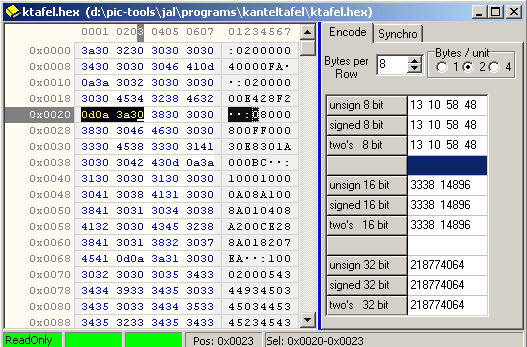
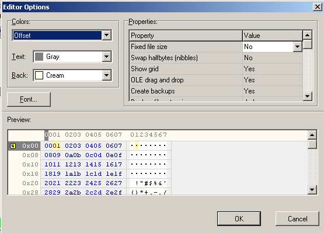
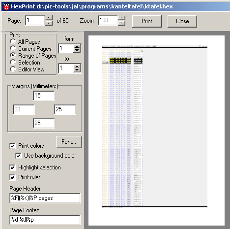

september 2005
Hex Editor
Just a simple hex editor.
Besides attaching an element of the document to the Hex Editor, you can open each file in the Hex Editor through the RM-menu.
I've considered to implement support for special filetypes, like intelhex8 format, but there are better tools for viewing these kind of files. E.g. a simulator or programmer will show these files nicely, and often have a disassembler on board.

Settings
Can either be reached through the RM-button or through the main menu Settings | HexEditor Settings.

Printing
